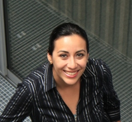

About me
Since January 2018, I am an associate professor at the Metropolitan Autonomous University Lerma Campus (UAM-L). From January 2011 to April 2014, I worked at Inria Lille - Nord Europe within the FUN research-team led by Nathalie Mitton. I received my PhD in Computer Science from the University of Lille 1 in December 2013 under the supervision of David Simplot-Ryl and Tahiry Razafindralambo. I got my Bachelor (Information Systems) and Master (Information Sciences and Technologies) degrees from National Autonomous University of Mexico (UNAM) and Metropolitan Autonomous University (UAM) in Mexico City, respectively.